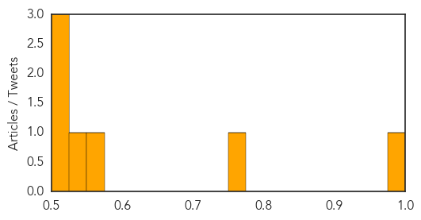

Dengue Fever
30-Day Web Trend
1 alerts, 0 warnings

30-Day Twitter Trend
2 alerts, 0 warnings
Article Locations

Article Confidences
Top Articles:
- 0.989
- East Java declares state of emergency - Indonesia
- 0.754
- Selangor MB calls on all quarters to intensify efforts to combat dengue
- 0.560
- Millions of GMO insects could be set loose in Florida Keys
- 0.549
- Minister launches new bid to eliminate stigma of leprosy
- 0.522
- Florida Keys Could be New Home to Millions of GMO Mosquitoes, Pending FDA Approval
- 0.515
- GE Mosquitos May Be on Their Way to the Florida Keys
- 0.507
- Millions of GMO insects could be released in Florida
Top Tweets:
- 0.738
- Flavivirus news: Dengue outbreak declared in Sembulan - The Rakyat Post: Dengue outbreak declar... http://t.co/41G77927bW pathogenposse
Hemmorhagic Fever
30-Day Web Trend
5 alerts, 0 warnings
30-Day Twitter Trend
0 alerts, 0 warnings

Article Locations

Article Confidences

Top Articles:
-
No articles found for Jan 26, 2015
Top Tweets:
-
No tweets found for Jan 26, 2015